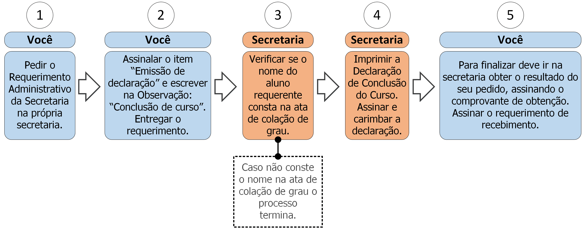

4.2 Declaração de conclusão do curso

4.2.1 Descrição
Ao terminar o curso você pode solicitar uma declaração de conclusão de curso (até que possa ser emitido seu diploma). Para isso deve seguir os seguintes passos:
- A. Peça o Requerimento Administrativo da Secretaria;
- B. Assinale o item “Emissão de declaração” e preencha no campo Observação: “Conclusão de curso”;
- C. Entregue o requerimento;
- D. A secretaria verificará se o nome do aluno requerente consta na ata de colação de grau, caso não conste o processo será encerrado (ver regra 1 na seção 4.2.3);
- E. A secretaria confeccionará e imprimirá a declaração;
- F. A secretaria carimbará e assinará a declaração;
- G. Vá à secretaria e procure saber sobre o resultado do seu requerimento (ver regra 2 na seção 4.2.3), caso a declaração esteja pronta deve assinar um comprovante de obtenção para retirá-la.
4.2.2 Documentos necessários
Nenhum.
4.2.3 Regras
- 1. Colação de grau: O aluno deve ter integralizado seus créditos e colado grau para que possa requerer sua declaração de conclusão de curso.
- 2. Prazo de efetivação: A Secretaria tem até 5 dias úteis para emitir a declaração de conclusão de curso.